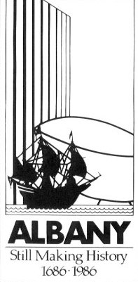

 In 1986, Albany staged a year-long celebration commemorating the 300th anniversary of its chartering as a city. That program was known widely as "The Tricentennial" and/or "A-300." A large "Tricentennial Commission" was named by city officials and a range of events and activities were presented throughout the year. These included galas, parades, contests, and "good-time" events that seemed to take their cue from the frequently played if not official Tricentennial song - "Let's Have a Party Albany!" Sale items ranging from diamonds to doughnuts were marketed as "Tricentennial souvenirs!" The Tricentennial Commission did sponsor a number of educational programs - some of which had a long-term effect on the consciousness of the community. Although still very much in its formative stages, the Colonial Albany Social History Project was asked to participate in the planning and presentation of community-based, history-related programs. The project played a central role in an exhibition of the 300-year-old charter document as the centerpiece of a widely circulated exhibit called "Government by the People." Also featured in that exhibition were four original drawings by historical artist Len Tantillo. A social history of the chartering, published also as Government by the People, was written by Stefan Bielinski. During the spring term of 1986, Bielinski taught a graduate seminar on Albany and its chartering at Russell Sage College. A public lecture series on the chartering accompanied the course and became a video program that aired widely on government access television in the years that followed. The Commission also published a printed version of the original charter document. It too was widely distributed. In retrospect, the Albany Tricentennial was responsible for the emergence of the Colonial Albany Project as a public history program - perhaps prematurely, but certainly connecting an originally one-dimensional research project to a range of interested audiences and communities for all time! Since the 1980s, the Project has presented a wide range of more traditional community-based history programs that have addressed all of our target audiences. However, over the past decade or so, The People of Colonial Albany Live Here Website has emerged and continues to grow and evolve toward the ultimate end of serving all of our intended programming needs. Please check in on our progress at any time.
These drawings were the result of Len Tantillo's ability to transform project research in the form of conversations with staff into pen-and-ink expositions depicting the first common council meeting, an overview diagram of the city in 1686, a street scene near city hall, and the fur trade - Albany's original reason for existence. These visual resources were used in the Tricentennial Programs noted above and in virtually many of the programs produced by the CAP since then. Follow this link to more information about the Albany Tricentennial on this website. first posted 2000; last revised: 12/20/10 |